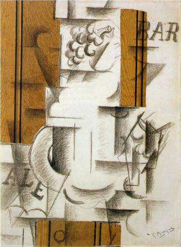

Jaqueline de manos cruzadas
Bendia ha retratado a Jacqueline a años luz de distancia y solo podemos mirar su tristeza, su enfado, su incomodidad. Creando a su alrededor un muro de silencio porque necesita estar sola. Si ella en algún momento se encontró así Picasso no podría acercarse, ni tocarla, ni hablarla para consolarla hasta que se enfriara. Sin embargo pintó el cuadro porque la entendía y mirando el cuadro yo también puedo sentirme como ella. Aunque necesite estar a solas, ella no esta sola, tan lejos y a la vez tan cerca.
- $100.000
- Tecnica: oleo
- Soporte: lienzo
- Medidas: 182 x 100 cm
- Fecha de realizacion: Junio de 2008
- Artista: José Bendia
- Categoria: Cubismo
Obras relacionadas por Categoria (Cubismo)

Salvator mundi

Salvator mundi

Salvator mundi